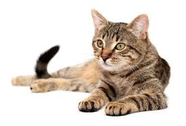
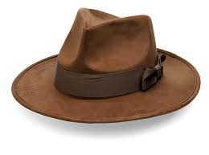

 

<script>
  var cat = document.querySelector("#cat");
  var hat = document.querySelector("#hat");
  var angleForCat = 0, angleForHat = 0, lastTime = null;
  function animate(time) {
    if (lastTime != null){
      angleForCat += (time - lastTime) * 0.001;
      angleForHat -= (time - lastTime) * 0.001;
    }
    lastTime = time;
    cat.style.top = (Math.sin(angleForCat) * 200) +  300 + "px";
    cat.style.left = (Math.cos(angleForCat) * 200) + 400 + "px";
    var rect = cat.getBoundingClientRect();
    var x = (rect.left + rect.right) / 2;
    var y = (rect.top + rect.bottom) / 2;
    hat.style.top = (Math.sin(angleForHat) * 50) +  y + "px";
    console.log(hat.style.top);
    hat.style.left = (Math.cos(angleForHat) * 50) + x + "px";
    requestAnimationFrame(animate);
  }
  requestAnimationFrame(animate);
  // Your code here.
</script>s